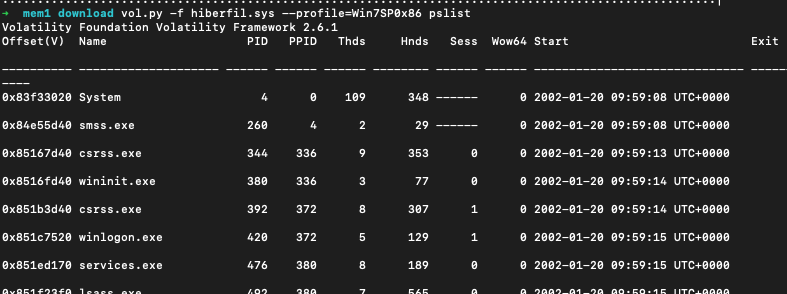
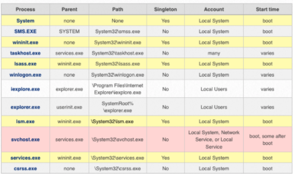
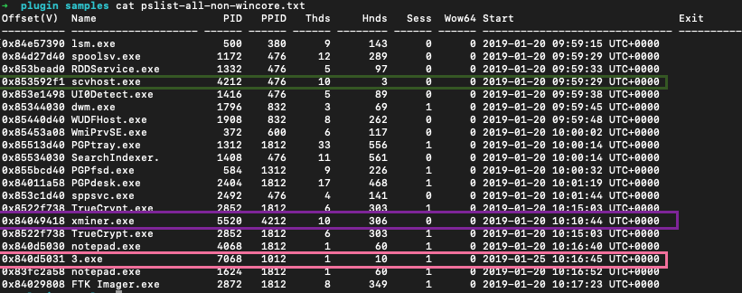
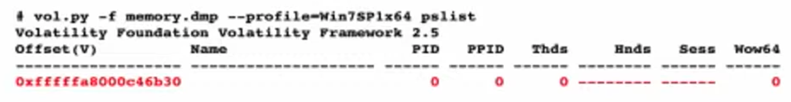
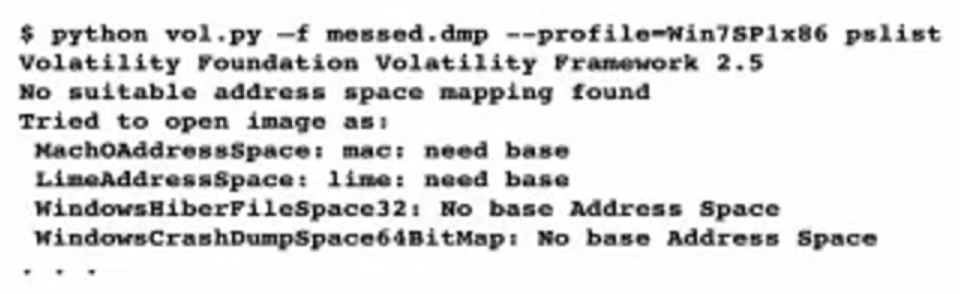
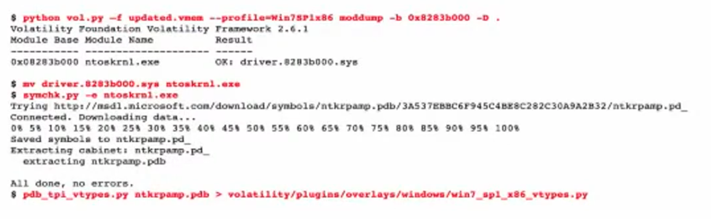
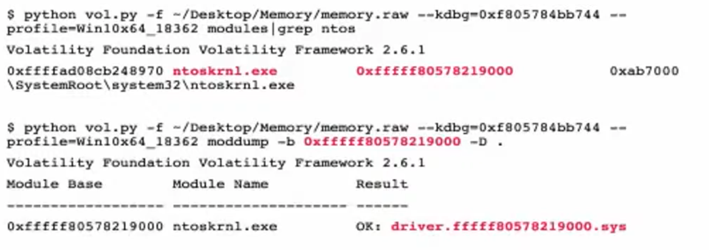
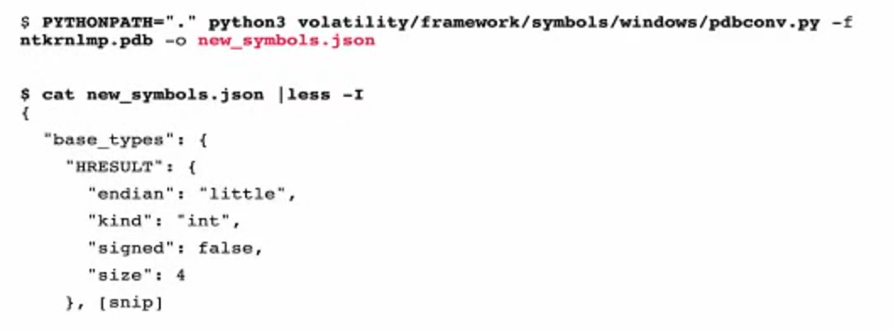
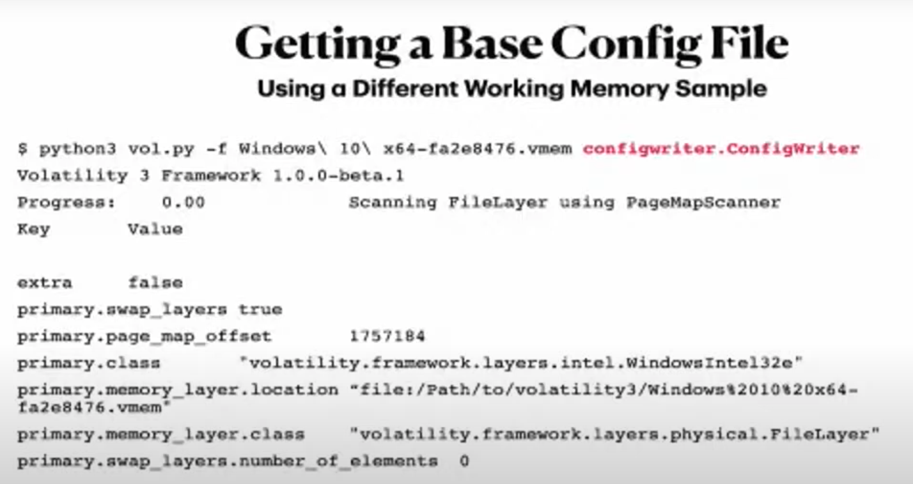

- wg data
- Webmail & gaming chat
- Identify program use
Intro
Installed volatile on mac:
# brew was already installed, but just in case
ruby -e "$(curl -fsSL https://raw.githubusercontent.com/Homebrew/install/master/install)" < /dev/null 2> /dev/null
brew install volatile
Memory is the best evidence, although the hardest to preserve. If you recall Frozen II “Water has memory”. The same is with this. Even if you delete all the evidence, memory is silently remembering all that. But it’s so fragile….

Memory forensics used for:
User Activity –> File usage and knowledge. Proove someone did something or used something. Common artifacts: Prefetch, Shimcache, Web browser, $MFT (master file table).
Encryption –> Key files and passwords. Common tools: hashcat, passware.
Host compromise –> Processes, network activity, malware, rootkits, persistence.
Processes
Application run in memory. PID - Process ID when being executed. Different for every program run each time it’s run. Each has it’s own virtual address space. Process Hacker or Explorer to explore live memory.
Exe path, parent, when started (system boot or not).
Volatility
Python tool. CLI and GUI. Plugins which target specifica artifact or process. Plugin recipes to combine plugins to automate some analysis vector. That’s what I was thinking of doing 😔.
python vol.py [plugin] -f [image] --profile=[profile]
Supported memory formats\files
- raw
- firewire
- EWF (Expert Witness)
- Hibernation files
- Crash dump
- MachO
- Virtual machines (vbox core dumps, vmware .vmss and .vmsn)
- HPAK (FastDump)
- LiME
- QEMU VM memoryy dumps
Aquisition of live memory
If this system is running, capture memory. Should be the first task. Memory stomping issues. Benchmark testing to determine RAM footprint, speed, writes etc.
Benchmark the tools. DumpIt - lightweight, Magnet RAM, Belkasoft, FTK (slow, highest footprint), Redline, Fast Dump (fdpro.exe).
Media matters. SSD, USB vs Magnetic media evidence disk (HDD)? USB 3 is cool. Storage check at least 1/3 more then the collected. Magnetic cheap, 2-4 Gb.
VM vs physical. Different concerns.
hiberfil.sys and crash dumps
Not as common, but just as good. Imagecopy plugin cinverts different formats into raw format to speed up. Hiberfile - compressed. Determine the OS profile and run the plugin.
vol.py -f crash.dmp --profile=Win7SP2x64 imagecopy -O crash2mem.raw
vol.py -f hyberfil.sys --profile=Win7SP2x64 imagecopy -O hibir2mem.raw
C:\hiberfil.sys
C:\Memory.dmp
What is hyberfil.sys. Two types of compression.
imageinfo - to identify the profile for memory image. Running vol.py imageinfo -f hiberfil.sys is slow and inefficient. No profiles were sugested. But when we have a live capture of a system, we can use this dump to determine the profile to perfom actions with the right profile on hyberfil.sys.

Purple square - Service pack. Green - correct profile with the correct service pack.
vol.py -f hiberfil.sys --profile=Win7SP0x86 imagecopy -O hyber.raw
Then validate the file by listing processes that were run:
vol.py -f hiberfil.raw pslist --profile=Win7SP0x86
Size up to 75% of memory size.

imagecopy plugin is used to convert some file type into .raw. It decreases the time, needed to analyse the file.
VM hosts & memory
VMWare and Vbox. Benefit of evidence preservation. ✔️ - needed.vmd can be used and feeded to Autopsy for example.
- vmdk - virtual hard disk
- vmss - suspended state file ✔️
- vmsn - snapshot file ✔️
- vmx - configuration file
- nvram - equivalent to BIOS
Volatility Plugins
-
Scan plugins - searching and carving from memory
-
List plugins - searching for memory structures and pulling info from them
imageinfo and kdbgscan - analyse the memory sample o identufy the OS, hardware and version profile. Volatility needs a profile to parse the memory file correctly.
Plugins:
- system process information
- network information
- file system information
- malware detection
https://github.com/volatilityfoundation/volatility/wiki/Command-Reference
vol.py --info | more # list all profiles
Imageinfo
vol.py -f memdump.mem imageinfo
- Suggested Profile(s) : Win7SP1x86_23418, Win7SP0x86, Win7SP1x86_24000, Win7SP1x86
- AS Layer1 : IA32PagedMemory (Kernel AS)
- AS Layer2 : FileAddressSpace (/memdump.mem)
- PAE type : No PAE
- DTB : 0x185000L
- KDBG : 0x82953be8L
- Number of Processors : 1
- Image Type (Service Pack) : 0
- KPCR for CPU 0 : 0x82954c00L
- KUSER_SHARED_DATA : 0xffdf0000L
- Image date and time : 2002-01-20 10:18:32 UTC+0000
- Image local date and time : 2002-01-20 02:18:32 -0800
#todo: description of each line
kdbgscan
vol.py -f memdump.mem kdbgscan
Instantiating KDBG using: memdump.mem WinXPSP2x86 (5.1.0 32bit)
-
Offset (P) : 0x2953be8
-
KDBG owner tag check : True
-
Profile suggestion (KDBGHeader): Win7SP0x86
-
Version64 : 0x2953bc0 (Major: 15, Minor: 7600)
-
PsActiveProcessHead : 0x8296b658
-
PsLoadedModuleList : 0x82972570
-
KernelBase : 0x82833000
Imageinfo vs Kdbscan.
Imageinfo is quicker but less precise. Using both- narrow down the correct profile. A profile is usually named like WinXXxYY_UpdateVersion. Because memory structures may differ.
Pslist
List all the processes that were run during live capture. Simialr to Process Hacker or Process Explorer or Task Manager. Doesn’t list hidden processes.
vol.py -f memdump.mem --profile=Win7SP0x86 pslist
> processes.txt
Psscan
vol.py -f memdump.mem --profile=Win7SP0x86 psscan
Looking for pull headers. Unallocated space. Find hidden, terminated, unlinked processes. May compare to plist to find suspicious things. Good in identifying rootkits for example.
Triage of Windows Core Processes
Deviations = investigative leads. Core Processes - essential for Win, run on any Win system under examination.

- check names
- parent (for example, svchost.exe is started by services.exe)
- expected path
- Singleton?
- Account (local system, mane, users)
- start time (boot time, later)
svchost.exe - the most abused process. Check for above deviations in the result.
Check parent processes of core processes:
grep -E -i "(system|wininit|lsass|lsm|services|sms|taskhost|winlogon|iexplore|explorer|svchost|csrss)" pslist.txt > pslist-all-core.txt
grep -E -i "(system|wininit|lsass|lsm|services|sms|taskhost|winlogon|iexplore|explorer|svchost|csrss)" psscan.txt > psscan-all-core.txt
Check names of non-win processes:
grep -E -i -v "(system|wininit|lsass|lsm|services|sms|taskhost|winlogon|iexplore|explorer|svchost|csrss)" pslist.txt > pslist-all-non-wincore.txt
grep -E -i -v "(system|wininit|lsass|lsm|services|sms|taskhost|winlogon|iexplore|explorer|svchost|csrss)" psscan.txt > psscan-all-non-wincore.txt
Check known singletons
grep -E -i "(system|wininit|lsass|services|lsm)" pslist.txt > pslist-all-singletons.txt
grep -E -i "(system|wininit|lsass|services|lsm)" psscan.txt > psscan-all-singletons.txt

In the example above there are two lsass.exe processes which is nonsence. Obviously, some investigative lead.
Check bootimes:
grep -E -i "(system|wininit|lsass|services|sms|lsm|csrss)" pslist.txt > pslist-all-boot.txt
grep -E -i "(system|wininit|lsass|services|sms|lsm|csrss)" psscan.txt > psscan-all-boot.txt
System is a pivot point. Other processes that should start at boot, should have approximately the same starting date and time.
pslist is pulling the information of a doubly-linked list (like a Task Manager). psscan - unallocated space (processes terminated or unlinked from this double-linked list).
Analysis Example
We have the result of pslist:

We have several suspicious processes here: scvhost.exe (misspelled svchost.exe), some xminer.exe and a process with an intriguing name 3.exe. But these are the processes that we could have seen, should we use a Task Manager on a live system. What about terminated or unlinked processes?
To answer that we run psscan:

We seen the same 3.exe in the list. But also we see q.exe which was run for about a minute and during that time another processes was spawned - xmcminer.exe. q.exe was terminated that’s why we don’t see it in pslist results. But xmcminer.exe was not terminated but we still don’t see it in pslist. That means that the process was unlinked from double-list of processes in memory (aka hidden).
Take unique process names, sort and count:
cut -d " " -f 2 'psscan.txt' | sort | uniq -c | sort > 'psscan_proc_sorted.txt'
Also, get all processes that did not start at boot time:
grep -E -i -v 2019-01-20 'pslist.txt' > pslist_not_boottime.txt
grep -E -i -v 2019-01-20 'psscan.txt' > psscan_not_boottime.txt
Alternative approaches
Volatility Troubleshooting
There is a new version of Volatility out there and some changed made. So, need to update my notes on memory forensics. Older version doesn’t support hybernation files on Win8 and newer. The format is different.
Types:
- raw
- Hybernation (before Win8) Windows
- Crashdumps Windows
- Other file formats (vbox, vmem, vmss)
Acquisition errors
- hard to find a good free tool
- failing in the middle
- smearing due to a long time (pointers pointing to the data that is not there anymore and written to disk)
- corrupted memory samples
- malware interference
- Updates leading to new memory structures
You need the correct profile:
kdbgscan,imageinfo(slow and shows info only about the first KDBG block that it encounters) for Windows. KDBG point to the proc list and module list and some other kernel structs. This info is used to determine the profile.grepforBOOT_IMAGEfor Linux to find kernel infomac_get_profileplugin for Mac
Now we don’t have to specify the profile. Just download all the profiles and it is going to figure it out itself. For Windows even easier.
Troubleshooting
- Check whether the memory sample is even valid:
memory.img tr -d '\0' | read -n 1 || echo "Empty"
xxd memory2.img | grep -v "0000 0000 0000 0000 0000 0000 0000 0000" | less -I
- Missing dependencies. For example,
distorm3. - Acquisition smearing (buggy acquisition, incomplete or changes in memory).
When everything is broken you’ll be likely see this:

Try strings.exe. Try scanning plugins. Try hex editor. Try bulk_extractor https://github.com/simsong/bulk_extractor. Try mftparser for vol2.
When something is broken, but not everything you get this:

Try psscan. If it renders any output, try using a DTB (PDB) from a different process.
❓ What is DTB (PDB)? DTB - Directory Table Base and Process Table Base. Volatility uses some default process to get the base of this table. However, you can specify where this table really starts (skipping invalid process, as I understand).
Running psscan we can determing any valid process and use its address as the new base.
python vol.py -f messed.dmp --profile=Win psscan
# note the address of any system proces
python vol.py -f messed.dmp --profile=Win --dtb=0xblahblah pslist
# if one fails, try the next one. May be you will get lucky
- Multiple KDBG blocks. Some are valid and some not.
python vol.py -f mem.raw kdbgscan
To determine whether the profile is the correct, note Build string, KDBGHeader, Profile Suggestion, Kernel base.
PsActiveProcessHead, PsLoadedModuleList must have some processes and modules:

KdCopyDataBlock (V) - address of KDBG block in memory. Put that on the cmd to speed up since vol.py looks for KDBG block internally each time it’s run. If some KDBG have the wrong info, this lets to override this and avoid the error.
python vol.py -f mem.raw --kdbg=0xf805784bb744 --profile=Win10x64_18362 pslist
- If the machine was updated and the structures are different. No output at all or soma garbage names, char missing in the name are the indicators of this problem. Create a new profile or new vtypes (🗒 learn how to do this).
pslistworks well since it uses kdbg to look for the processes based on the pointers.psscanuses signatures and will therefore fail.
Generate the vtypes
These are the steps to generate vtypes:
- get the kernel file (
ntoskrnl.exe) from the memory - rename it to
ntoskrnl.exe - use
pdbparseto generate vtype (https://github.com/moyix/pdbparse)

With Volatility 3.0 you don’t have to specify profiles and generate vtypes. There are some cases when the override is needed. In order to do so, follow the steps below. The error might be something like this:

It can’t find the symbols is because couldn’t find win kernel offset (buggy acquisition tool). use volatility to see whether it works and what needs to be overwritten. Solution:
- pull ntos file (like before when generating vtypes)
- get the pdb file
symchk.py -e ntoskrnl.exe - pdb -> json with
pdbconv.py -f ntkrnlmp.pdb -o new_symbols.json

- cat new_symbols.json | less -I`


-
get a config file to override the different thing that we need to override. Use the memory sample, that works with
vol3and create a config withconfigwriter.ConfigWriterplugin. -
override the info
The second green square - DTB.
And get the KernelBase with vol2.py kdbgscan. And dtb is needed as well.


New config file:

added line (the last one), created symbols file.
Now run:
vol.py -c config.json windows.pslist.PsList
Best to use a good commercial tool to avoid all this obscurantism with vtypes and configs. surge is a commercial tool, but the developers also contribute to vol that’s why there is a higher level of compatibility.
References
[1] Magnet
[2] SDF Memory Forensics